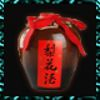

| 名称 | 效果 | 获得方法 | 描述 | |
| 叫花鸡 | 生命上限+200 | 小村灶台消耗食材5 | 可稍微增加生命最大值 | |
 |
好逑汤 | 生命上限+400 | 小村灶台消耗食材10 | 名菜，可增加生命最大值 |
 |
玉笛谁家听落梅 | 生命上限+600 | 小村灶台消耗食材15 | 名菜，可增加生命最大值 |
 |
千年灵芝 | 内力上限+2000 | - | 可增加内力最大值 |
|  | 梨花酒 | 内力上限+200 | 小村灶台消耗食材5 | 名酒，可增加内力最大值 |
| 玉露酒 | 内力上限+400 | 小村灶台消耗食材10 | 名酒，可增加内力最大值 | |
 |
大蟠桃 | 生命上限+1000 内力上限+1000 |
小村、商店、场景 | 可增加生命及内力最大值 |
| 即墨老酒 | 内力上限+600 | 小村灶台消耗食材15 | 名酒，可增加内力最大值 | |
 |
五宝花蜜酒 | 内力上限+1000 | 小村灶台消耗食材25 | 名酒，可增加内力最大值 |
 |
千年人参 | 生命上限+2000 | - | 可增加生命最大值 |
 |
腊八粥 | 生命上限+1000 | 《食神秘笈》/灶台消耗食材25 | 可增加生命及内力最大值 |
| 天山雪莲 | 生命上限+1500 内力上限+1500 |
- | 可增加生命及内力最大值 | |
 |
莽牯朱蛤 | 毒抗+100 | 无量山洞击败蛤蟆 | 万毒之王，百毒不侵 |
| 通犀地龙丸 | 毒抗+100 | 高升客栈出售2999两 | 西毒炼制，百毒不侵 | |
| 玄元丹 | 可重新选择内力性质 | 周目商店300秘武残章兑换 | 周目商店售卖神秘物品，具有不可思议的功效 | |
| 无极丹 | 可遗忘任意一格武功 | 周目商店500秘武残章兑换 | 周目商店售卖神秘物品，具有不可思议的功效 | |
| 洗髓丹 | 可重新选择人物资质 | 周目商店700秘武残章兑换 | 周目商店售卖神秘物品，具有不可思议的功效 | |